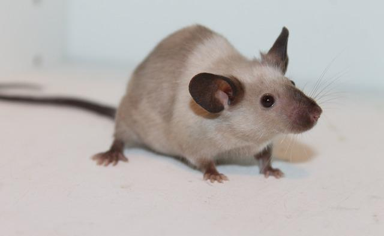
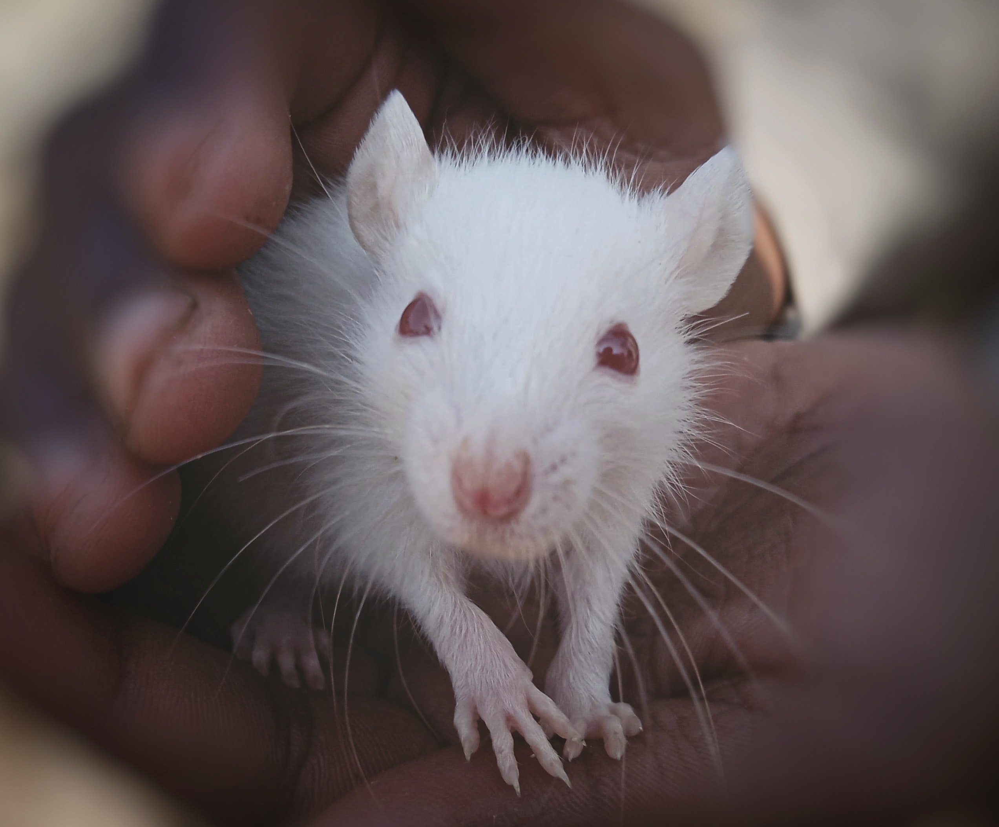

This Website about rats is awesome
Rats are extremely smart and empathic. They can be taught to perform tricks, master puzzles, run through mazes and even solve simple problems! Rats are awesome!
WHY RATS ARE SO COOL
 Despite their general reputation as a filthy animal, who would think that rats are actually considered as a very clean animal and really hate getting dirty!
 Did you ever think that rats are so hard to trap? Here’s the answer: Rats are naturally suspicious of anything new in their environment.
Did you ever think that rats are so hard to trap? Here’s the answer: Rats are naturally suspicious of anything new in their environment. According to the Integrated Taxonomic Information System (ITIS) there are more than 60 species of rat that can be found worldwide.
 Unlike other pests, rats do not have a breeding season and are well-known as fast breeders because of their behavior to breed non-stop in a short period of time.
Unlike other pests, rats do not have a breeding season and are well-known as fast breeders because of their behavior to breed non-stop in a short period of time.Ben, the two of us need look no more
Call to action! It's time!
Sign up for our product by clicking that button right over there!